Types of Proximity Sensors
A proximity sensor is a device that detects the presence or absence of an object or its distance from the sensor without any physical contact.
Examples: Automatic doors, mobile phone touchless sensing, industrial automation for object detection.
Working Principle
Proximity sensors work by detecting changes in magnetic field, capacitance, inductance, or light caused by the nearby object.
- Steps:
- The sensor emits a signal (magnetic, electric, or light).
- When an object enters the sensing range, it disturbs or reflects the signal.
- The sensor detects this disturbance.
- The sensor outputs a signal (digital ON/OFF or analog distance).
Types of Proximity Sensors
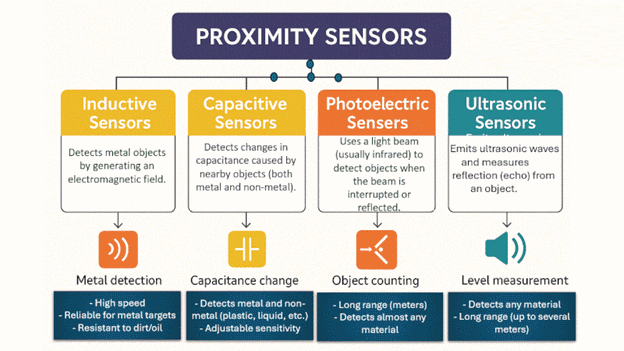- Inductive Proximity Sensor:
An inductive proximity sensor detects the presence of metallic objects without touching them
by using an electromagnetic field.
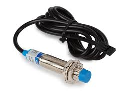
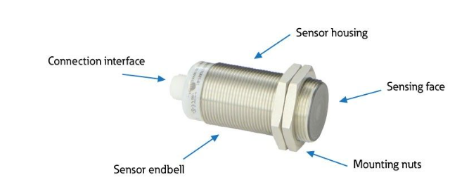
Principle: Changes in electromagnetic field induce current when a metal object is nearby.
Applications:
- Industrial automation.
- Metal detection.
- Counting metal parts.
Main Part of inductive Proximity Sensor
- Coil: The coil generate necessary electro magnetic field a cup shaped magnetic core holds the coil. This core is necessary to concentrate coil magnetic field on the front area of the sensor.
- Oscillator: Oscillator is generally LC oscillator. It produce radio frequency which helps to generate electro magnetic filed.
- Trigger Circuit: The Trigger circuit senses the change in amplitude of oscillation and give the signal to output circuit.
- Output Circuit: The output circuit has a transistor after receiving the signal , transistor switches on and gives an output.
When no object in Sensing range of Inductive Proximity Sensor then Sensor output low.
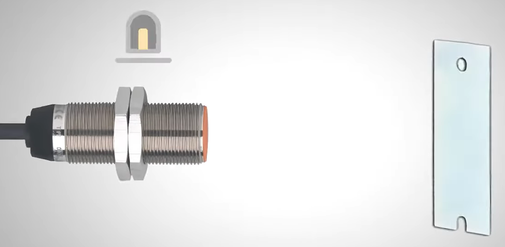When any object comes in Sensing range of Inductive Proximity Sensor then Sensor output High.

- Capacitive Proximity Sensor:
Capacitive proximity sensors (CPS) are sensing device designed to detect both metallic and
nonmetallic targets. They can detect lightweight or small objects that cannot be detected by
mechanical limit switches. CPS are ideally suited for plastics and other nonmetallic
targets, for liquid level control and for sensing powdered or granulated material.
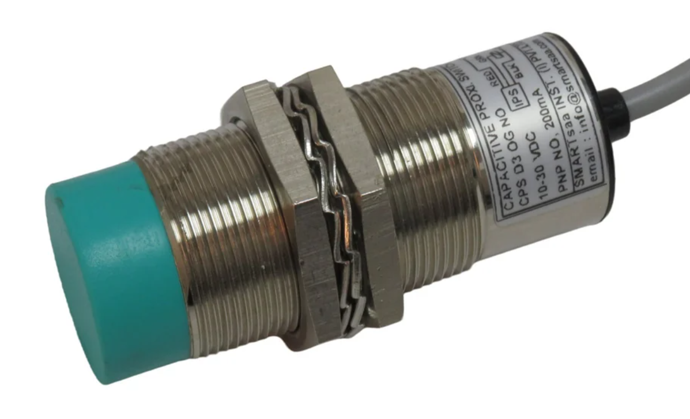
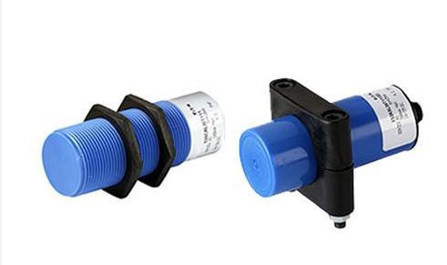
Capacitive Proximity Sensor Components: Capacitive sensors are all about four key components: the body, the face that does the sensing a light to show what's happening, and the cable or where it hooks up. And here's the kicker: no moving parts are needed at all.
- Body of the sensor: Peek inside the sensor's body, and you will find all the cool sensing electronics tucked away. Plus, that plastic body? It's like a shield against corrosion.
- Sensing face: It is where the sensor gets its mojo, spotting targets with its oscillating field. It is like the sensor's radar.
- Indicator light: It is at the opposite end of the sensor, keeping an eye out for action. It flips on when something is in the sensor range and off when it's not.
- Sensor electrical connection: These sensors are pretty versatile. Some come ready to roll straight out of the box with a cable already hooked up and equipped with all the necessary wires.

Capacitive Proximity Sensor Working Principle: Imagine the sensing head of a capacitive sensor. It's got two plates that behave like an open capacitor with a particular capacitance. The oscillator within the sensor charges a capacitor plate, thus forming an electrostatic field. This oscillator also produces a specific frequency waveform, establishing a reference point for the sensor's detector circuit.
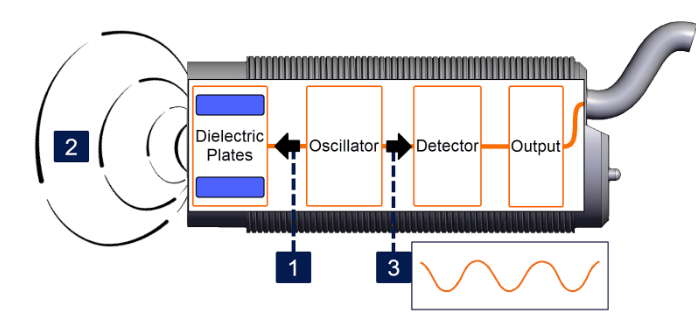When a target approaches the capacitive proximity sensor and disrupts the sensing field, two main actions occur. First, the disruption increases the capacitance of the electrostatic field. Secondly, due to the change in capacitance caused by the presence of the target, the frequency of the oscillator shifts. The detector circuit monitors this frequency shift and triggers a response, such as activating the sensor's output when the detected change exceeds a predetermined threshold.
 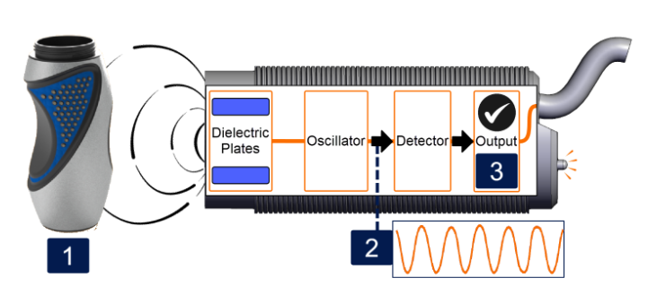
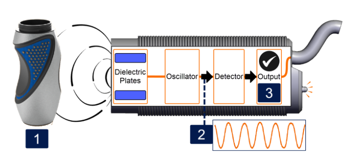
Applications:
- Liquid level detection.
- Food processing.
- Detecting non-metal objects.
- Magnetic Proximity Sensor:
Magnetic proximity sensors are electronic devices used to detect the presence, movement, or
position of objects without physical contact. These sensors work by sensing magnetic fields,
either from a permanent magnet or from changes in the surrounding magnetic environment. They
are widely used in industrial automation, robotics, safety systems, automotive applications,
and more.
Working Principle: The working of a magnetic proximity sensor depends on magnetic field detection.
- The sensor has a magnetic field-sensitive element (such as a Hall effect sensor or reed switch).
- When a magnet or magnetic object comes close to the sensor, it disturbs the magnetic field.
- This change is detected by the sensing element.
- The sensor then produces an electrical signal (ON/OFF or analog output).
- When the magnetic object moves away, the sensor returns to its normal state.
Types (Briefly):
- Reed Switch Sensor: Reed switch-based magnetic sensors consist of a
hermetically
sealed glass bulb. The glass bulb encloses two ‘reeds’ that are magnetic. When a
magnet
is placed near the switch, the two reeds come into contact with each other,
completing
the circuit.
Uses magnetic contacts that close or open. 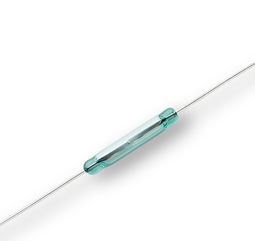 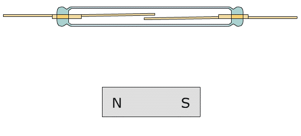 - Hall Effect Sensor: Hall effect sensors use the principle of the same name to measure the magnetic field generated by a magnetic object. There are two types of Hall sensors, digital and analog. Digital sensors output a logic HIGH or LOW signal. Analog sensors output a voltage/current proportional to the strength of the magnetic field. 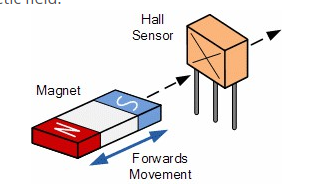 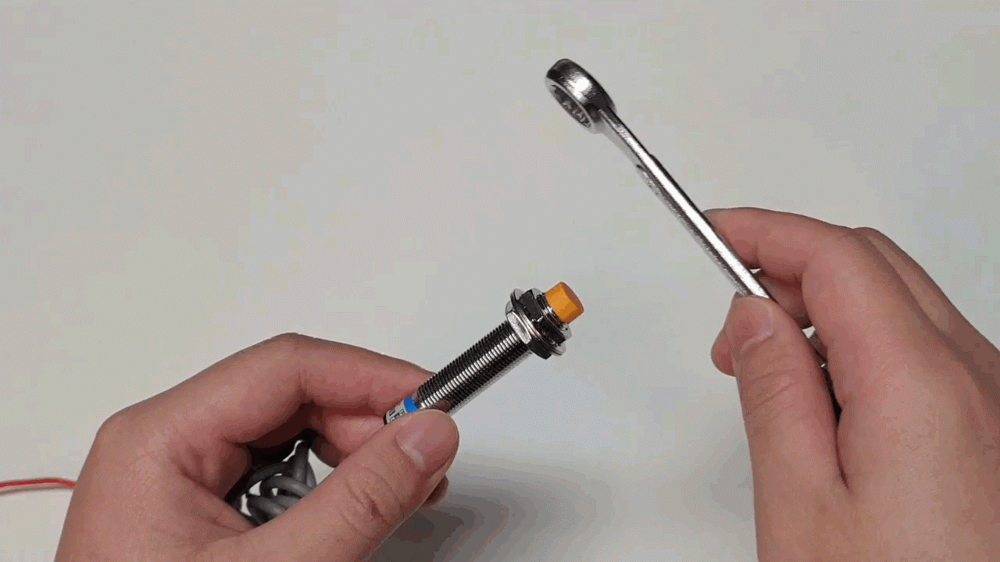
- Photoelectric Sensors:
Photoelectric Sensors detect objects, changes in surface conditions, and other items through
a variety of optical properties.
A Photoelectric Sensor consists primarily of an Emitter for emitting light and a Receiver for receiving light. When emitted light is interrupted or reflected by the sensing object, it changes the amount of light that arrives at the Receiver. The Receiver detects this change and converts it to an electrical output. The light source for the majority of Photoelectric Sensors is infrared or visible light (generally red, or green/blue for identifying colors). 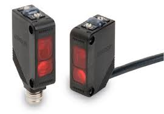It is widely used in automation, packaging, and safety systems.
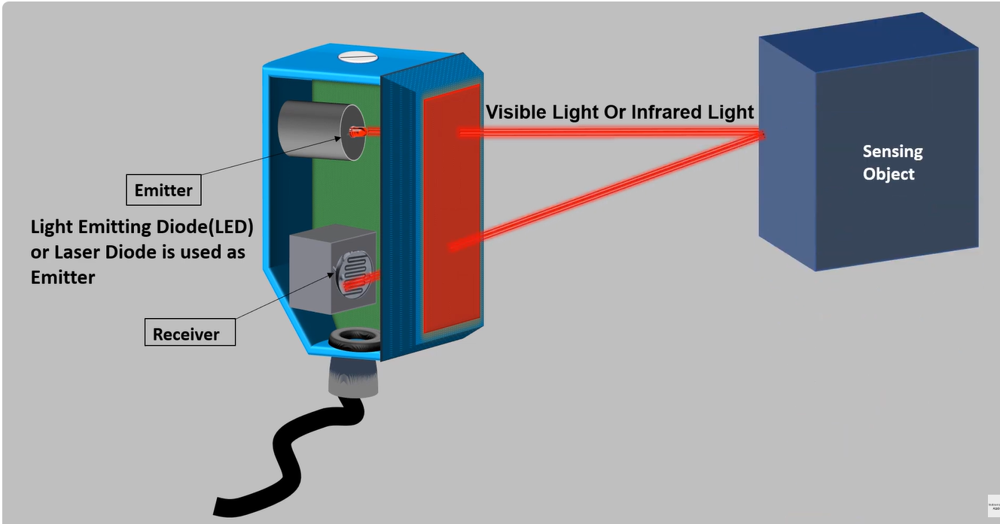 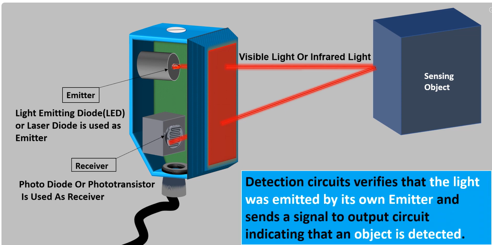Working Principle:
- The sensor has a light emitter (LED or laser) and a receiver (photodiode or phototransistor).
- The emitter sends a light beam toward the object or a reflector.
- When the object interrupts or reflects the light beam:
- The receiver detects the change in light intensity.
- The sensor generates an electrical output signal (ON/OFF).
- This allows the system to detect the presence, position, or movement of the object without physical contact.
Types of Photoelectric Sensors
 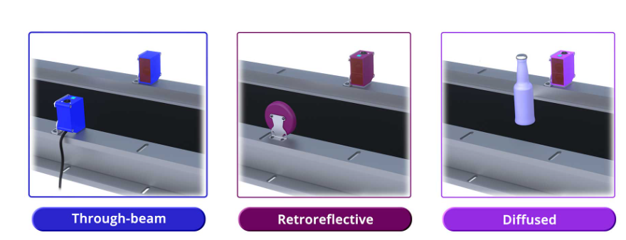
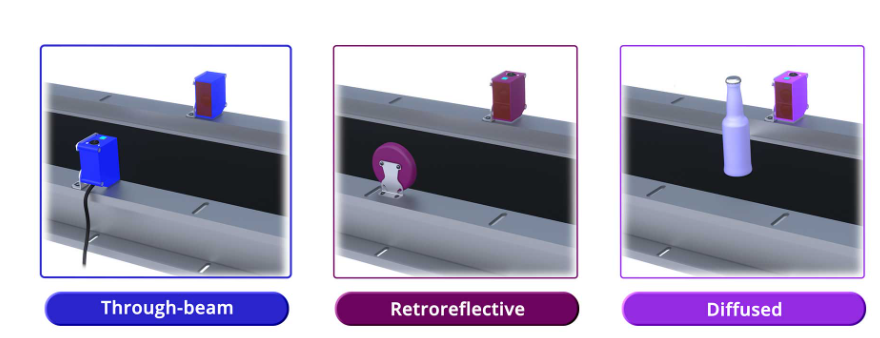
- Through-beam (Opposed) Sensor: The Emitter and Receiver are installed
opposite each other to enable the light from the Emitter to enter the Receiver. When
a sensing object passing between the Emitter and Receiver interrupts the emitted
light, it reduces the amount of light that enters the Receiver. This reduction in
light intensity is used to detect an object. The sensing method is identical to that
of Through-beam Sensors and some models called Slot Sensors are configured with an
integrated Emitter and Receiver.
Advantages: Long sensing distance, reliable.
Applications: Conveyor object detection.
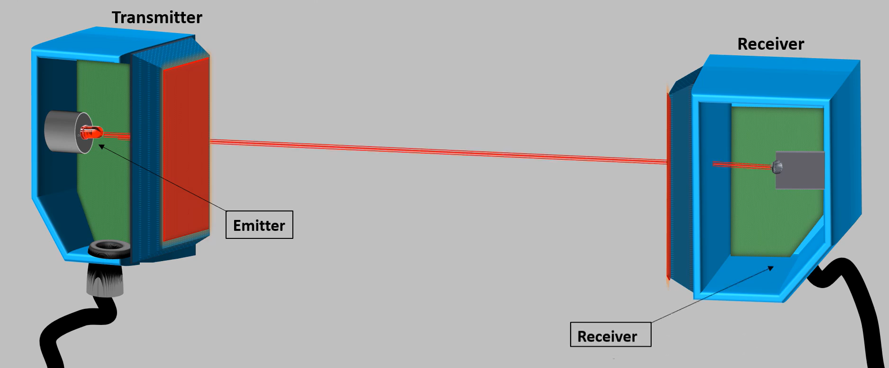 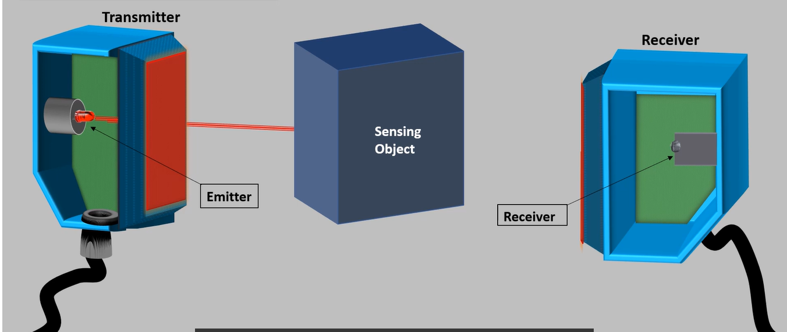 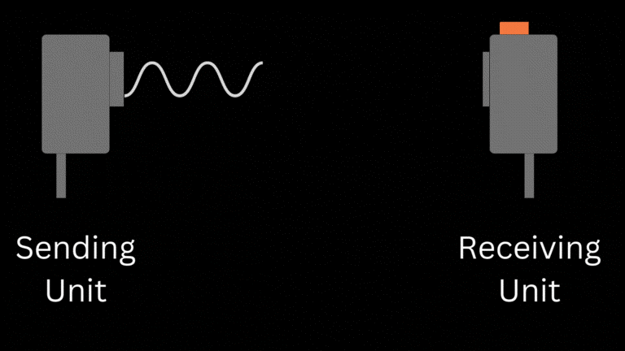 - Retro-reflective Sensor: The Emitter and Receiver are installed in the same
housing and light from the Emitter is normally reflected back to the Receiver by a
Reflector installed on the opposite side. When the sensing object interrupts the
light, it reduces the amount of light received. This reduction in light intensity is
used to detect the object.
Advantages: Easier installation than through-beam.
Applications: Packaging, counting products.
 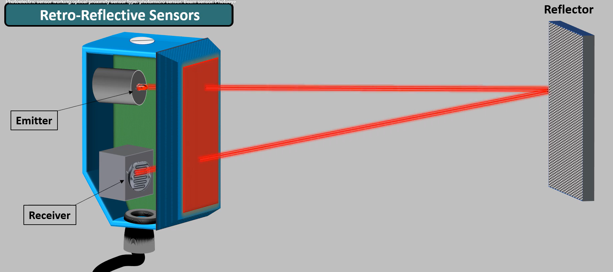
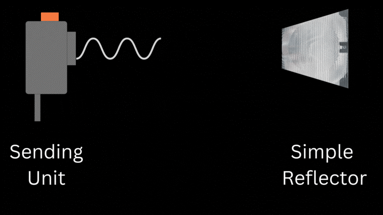
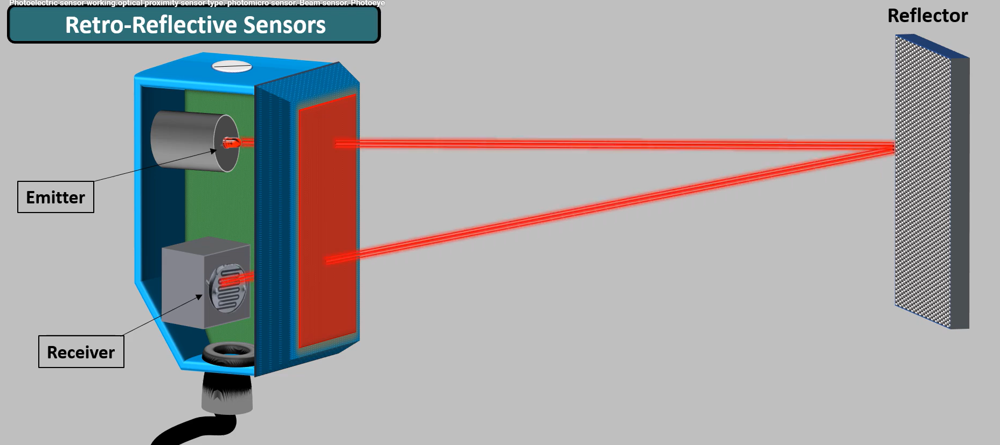
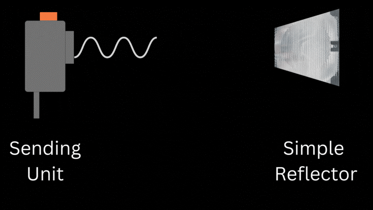
- Diffuse (Proximity) Sensor:
The Emitter and Receiver are installed in the same housing and light normally does
not return to the Receiver. When light from the Emitter strikes the sensing object,
the object reflects the light and it enters the Receiver where the intensity of
light is increased. This increase in light intensity is used to detect the object.
Advantages: Compact, easy setup.
Applications: Short-range detection, small objects.
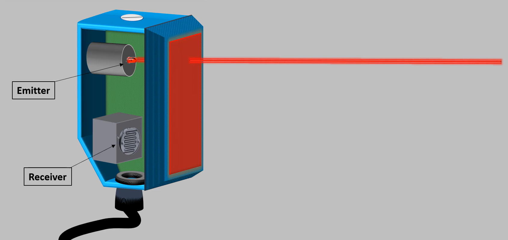 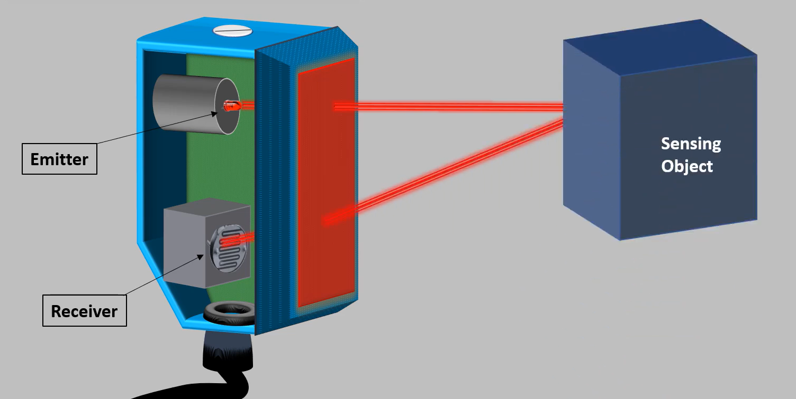 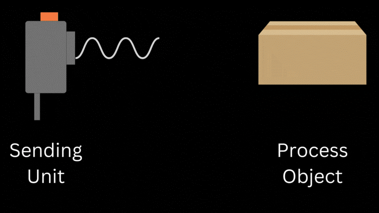 - Ultrasonic Sensor:
An ultrasonic sensor is an instrument that measures the distance to an object using
ultrasonic sound waves. What is an ultrasonic sensor? It is a device that uses a
transducer to send and receive ultrasonic pulses that relay back information about
an object’s proximity. High-frequency sound waves reflect across boundaries to
produce distinct echo patterns.
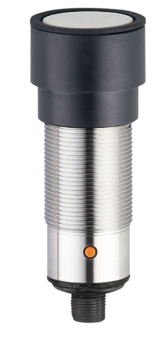
How Ultrasonic Sensors Work?
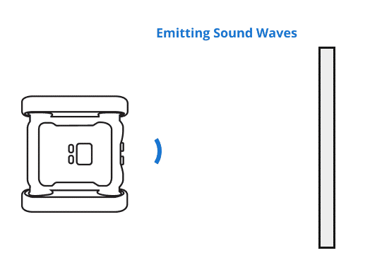
Ultrasonic sensors work by sending out a sound wave at a frequency above the range of human hearing. The transducer of the sensor acts as a microphone to receive and send the ultrasonic sound. Our sensors, like many others, use a single transducer to send a pulse and to receive the echo. The sensor determines the distance to a target by measuring time lapses between the sending and receiving of the ultrasonic pulse. This process is a key aspect of ultrasonic sensor working.Ultrasonic sensors work by sending out a sound wave at a frequency above the range of human hearing. The transducer of the sensor acts as a microphone to receive and send the ultrasonic sound. Our sensors, like many others, use a single transducer to send a pulse and to receive the echo. The sensor determines the distance to a target by measuring time lapses between the sending and receiving of the ultrasonic pulse. This process is a key aspect of ultrasonic sensor working.